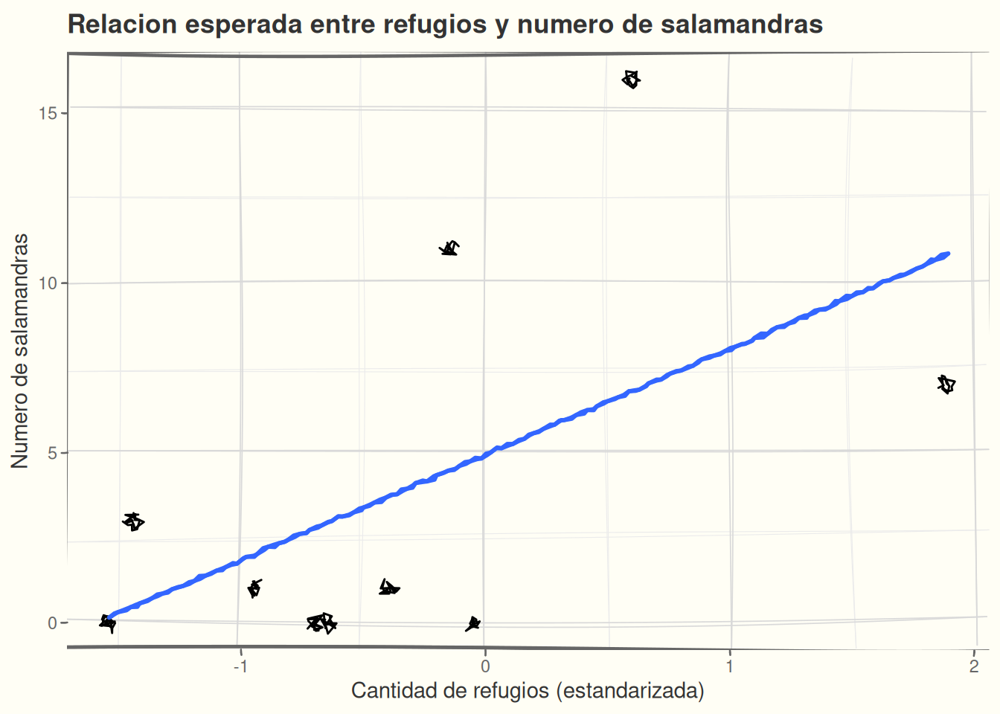
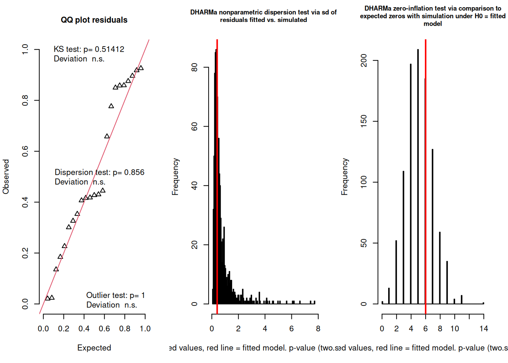
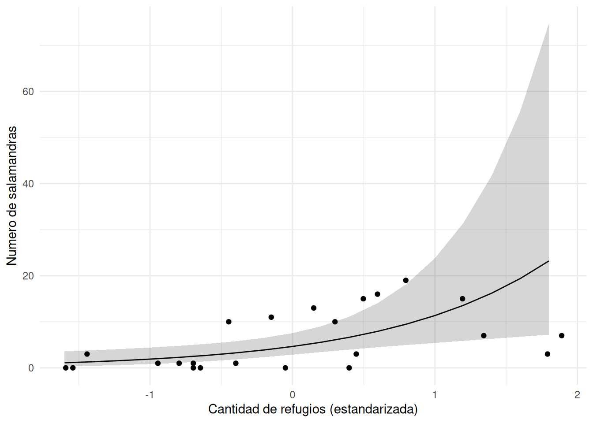
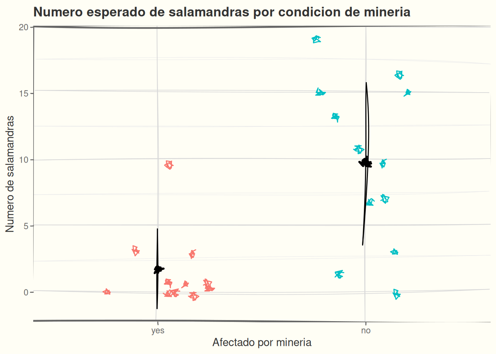
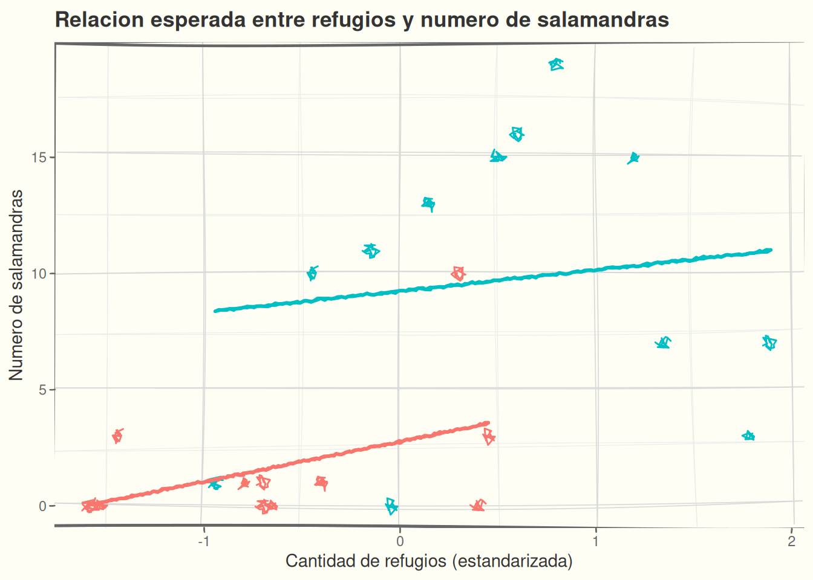

salamanders_sub |>
head() |>
knitr::kable()| site | mined | cover | count |
|---|---|---|---|
| R-1 | no | -0.4476157 | 10 |
| R-2 | no | 0.5968209 | 16 |
| R-3 | no | 1.3428470 | 7 |
| R-4 | no | -0.9449664 | 1 |
| R-5 | no | 0.4973508 | 15 |
| R-6 | no | 0.1492052 | 13 |
Usaremos el conjunto de datos Salamanders disponible en el paquete {glmmTMB}. Este conjunto de datos contiene conteos de salamandras con covariables del sitio y covariables de muestreo. Cada uno de los 23 sitios fue muestreado 4 veces. Para nuestra analisis, vamos a simplificar los datos un poco:
En fin, tenemos datos de conteo salamandras de una especies, de 23 sitios, y las covariables / predictores.
| site | mined | cover | count |
|---|---|---|---|
| R-1 | no | -0.4476157 | 10 |
| R-2 | no | 0.5968209 | 16 |
| R-3 | no | 1.3428470 | 7 |
| R-4 | no | -0.9449664 | 1 |
| R-5 | no | 0.4973508 | 15 |
| R-6 | no | 0.1492052 | 13 |
La pregunta ecologica se centra en entender como las actividades de mineo (removiendo topes de montanas, llenando valles con sedimentos) afectan la presencia y abundancia de salamandras en unos sitios en Kentucky, USA. Una covariable importante es la cobertura de rocas en el fondo de los arroyos, porque rocas grandes presentan habitats mejores para salamandras.
Para mas info leen el articulo: https://besjournals.onlinelibrary.wiley.com/doi/full/10.1111/1365-2664.12585
Hipotesis:
La abundancia de las salamandras es determinada por la cantidad de objetos (rocas grandes) que puede usar como refugio en el aroyo. Esta relacion puede diferir entre arroyos afectados y no afectados por mineria, ya que la mineria puede introducir grandes cantidades de sedimento y modificar las condiciones del habitat, incluyendo la disponibilidad de refugios para salamandras.
La abundancia de salamandras aumentara con la cantidad de refugios (rocas grandes) en el arroyo.
Representacion grafica. Dibujamos esto en nuestra bitacora a mano o con datos preliminares:

La prediccion y el grafico nos indican claramente cuales datos se necesitan y cual parametro tenemos que estimar para comprobar la prediccion. En este caso, el grafico sugiere una relacion positiva, y la cantidad de interes es la pendiente de la regression.
Como los datos son conteos, usaremos modelos lineales generalizados, con una distribución binomial negativa.
Traduccimos a codigo:
modelo_pred_1 <- glmmTMB::glmmTMB(
count ~ cover,
data = salamanders_sub,
family = glmmTMB::nbinom2)
summary(modelo_pred_1) Family: nbinom2 ( log )
Formula: count ~ cover
Data: salamanders_sub
AIC BIC logLik -2*log(L) df.resid
128.3 131.7 -61.2 122.3 20
Dispersion parameter for nbinom2 family (): 0.886
Conditional model:
Estimate Std. Error z value Pr(>|z|)
(Intercept) 1.5361 0.2472 6.214 5.15e-10 ***
cover 0.8937 0.3204 2.790 0.00528 **
---
Signif. codes: 0 '***' 0.001 '**' 0.01 '*' 0.05 '.' 0.1 ' ' 1sim_res <- DHARMa::simulateResiduals(fittedModel = modelo_pred_1, n = 1000)
# dividir la area de grafico en tres columnas
par(mfrow = c(1, 3))
# agregar los tres tests de diagnóstico de DHARMa
DHARMa::testUniformity(sim_res)
Exact one-sample Kolmogorov-Smirnov test
data: simulationOutput$scaledResiduals
D = 0.16398, p-value = 0.5141
alternative hypothesis: two-sided
DHARMa nonparametric dispersion test via sd of residuals fitted vs.
simulated
data: simulationOutput
dispersion = 0.55243, p-value = 0.856
alternative hypothesis: two.sided
DHARMa zero-inflation test via comparison to expected zeros with
simulation under H0 = fitted model
data: simulationOutput
ratioObsSim = 1.1552, p-value = 0.836
alternative hypothesis: two.sidedGraficamos los datos y la relacion estimada por el modelo:
mod_pred_1_predicted$cover |>
dplyr::as_tibble() |>
ggplot(aes(x = x, y = predicted)) +
geom_line() +
geom_ribbon(aes(ymin = conf.low, ymax = conf.high), alpha = 0.2) +
theme_minimal() +
labs(
x = "Cantidad de refugios (estandarizada)",
y = "Numero de salamandras") +
geom_point(data = salamanders_sub, aes(x = cover, y = count))
Preguntas:
Para contestar preguntas 1-3, usamos la funcion confint. Los coeficientes de un modelo con enlace log estan en escala logaritmica. Con exp() los convertimos a cambios multiplicativos en el conteo esperado.
Coef Additivo (escala logaritmica): Representa el cambio esperado en el logaritmo del conteo por unidad de cambio en el predictor.
coef(X) = 0.095 -> Para unidad aumento en X, el logaritmo de Y aumenta additivamente por 0.095.
Coef Multiplicativo (escala original): Representa el factor por el cual se multiplica el conteo esperado por unidad de cambio en el predictor. Se obtiene aplicando exp() a los coeficientes aditivos.
exp(coef(X)) = 1.10 -> Para unidad aumento en X, el conteo esperado de Y se multiplica por 1.10.
Los modelos lineales simples (tambien conocidos como GLMs con enlace ‘Identidad’ y distribucion ‘Normal’), siempre tienen coeficientes additivos en la escala original de la respuesta.
coef(X) = 0.5 -> Para unidad aumento en X, el valor esperado de Y aumenta aditivamente por 0.5.
2.5 % 97.5 % Estimate
(Intercept) 1.0516099 2.020548 1.5360790
cover 0.2657917 1.521591 0.8936913 2.5 % 97.5 % Estimate
(Intercept) 2.862255 7.542458 4.646336
cover 1.304463 4.579505 2.444135Respuestas:
0exp(), cuanto se multiplica el conteo esperado por cada aumento de una unidad en cover?El resultado concuerda con la predicción.
Arroyos afectados por mineria tienen menos salamandras que arroyos no afectados por mineria.
La segunda prediccion solo se enfoca en el numero de salamandras entre arroyos afectados y no afectados por mineria. En este caso no nos importa como la cantidad de refugios esta relacionada con la abundancia. Entonces el modelo tiene que considerar la mineria como una variable predictor.

Define:
Ajustar el modelo aqui:
Diagnosis del modelo:
Contestamos estas preguntas:
Su respuestas a preguntas 1-3:
Contesta brevemente si el resultado concuerda con la prediccion:
La relación entre la cantidad de refugios y el numero de salamandras difiere entre arroyos afectados y no afectados por mineria.
Ahora, aqui nos interesa la mineria y tambien la relacion con la cantidad de refugios. Entonces necesitamos un modelo con dos predictores que interactuan, para poder estimar si la pendiente en arroyos afectados es diferente que la pendiente en arroyos no afectados.

Tenemos dos opciones para modelo con dos predictores
Aditivo:
Interacciones:
¿Cuál corresponde a nuestra predicción? ¿Por qué?
Define:
Ajustar el modelo aqui:
Diagnosis del modelo:
Contestamos estas preguntas:
Su respuestas a preguntas 1-4:
Contesta brevemente si el resultado concuerda con la prediccion:
---
title: "Lab 07: Vinculo entre prediccion y modelo"
subtitle: ""
format:
html:
toc: true
number-sections: false
code-tools: true
pdf:
documentclass: scrartcl # KOMA-Script class
classoption: [DIV=12]
geometry: margin=1in
fontfamily: libertinus # LaTeX font package
colorlinks: true
linkcolor: blue
toc: false
highlight-style: github # code block theme
title-block-banner: true # colored title banner
lang: es
warning: false
---
```{r}
#| echo: false
suppressPackageStartupMessages({
library(ggplot2)
library(ggsketch)
library(dplyr)
library(MASS)
library(glmmTMB)
library(DHARMa)
})
data("Salamanders", package = "glmmTMB")
salamanders_sub <- Salamanders |>
filter(spp == "DM") |>
group_by(site, mined, cover) |>
summarise(count = sum(count), .groups = "drop")
```
## Contexto ecologico
Usaremos el conjunto de datos `Salamanders` disponible en el paquete `{glmmTMB}`. Este conjunto de datos contiene conteos de salamandras con covariables del sitio y covariables de muestreo. Cada uno de los 23 sitios fue muestreado 4 veces. Para nuestra analisis, vamos a simplificar los datos un poco:
- trabajaremos solo con uno de los especies "DM" (*Desmognathus monticola*). Esto remueve el efecto de la variabilidad entre especies, lo que es muy importante, pero lo vemos en actividades mas adelante.
- sumando los cuatro conteos de cada sitio. Entonces, vamos a remover el covariable 'muestreo', para no tener que preocuparse en este momento sobre los efectos de muestreo, medidas repetidas, etc.
En fin, tenemos datos de conteo salamandras de una especies, de 23 sitios, y las covariables / predictores.
```{r}
salamanders_sub |>
head() |>
knitr::kable()
```
La pregunta ecologica se centra en entender como las actividades de mineo (removiendo topes de montanas,
llenando valles con sedimentos) afectan la presencia y abundancia de salamandras en unos sitios en
Kentucky, USA. Una covariable importante es la cobertura de rocas en el fondo de los arroyos, porque
rocas grandes presentan habitats mejores para salamandras.
Para mas info leen el articulo: [https://besjournals.onlinelibrary.wiley.com/doi/full/10.1111/1365-2664.12585](https://besjournals.onlinelibrary.wiley.com/doi/full/10.1111/1365-2664.12585)
## Hipotesis
**Hipotesis:**
> La abundancia de las salamandras es determinada por la cantidad de objetos (rocas grandes) que
> puede usar como refugio en el aroyo. Esta relacion puede diferir entre arroyos afectados y no
> afectados por mineria, ya que la mineria puede introducir grandes cantidades de sedimento y
> modificar las condiciones del habitat, incluyendo la disponibilidad de refugios para salamandras.
### Prediccion 1
> **La abundancia de salamandras aumentara con la cantidad de refugios (rocas grandes) en el arroyo.**
Representacion grafica. Dibujamos esto en nuestra bitacora a mano o con datos preliminares:
```{r}
#| echo: false
salamanders_sub |>
dplyr::slice_sample(n = 10) |>
ggplot(aes(x = cover, y = count)) +
geom_sketch_point() +
# geom_sketch_smooth(method = MASS::glm.nb, se = FALSE) +
geom_sketch_smooth(method = lm, se = FALSE) +
coord_sketch(expand = TRUE) +
theme_sketch(rough_frame = TRUE) +
labs(
title = "Relacion esperada entre refugios y numero de salamandras",
x = "Cantidad de refugios (estandarizada)",
y = "Numero de salamandras"
)
```
La prediccion y el grafico nos indican claramente cuales datos se necesitan y
cual parametro tenemos que estimar para comprobar la prediccion. En este caso,
el **grafico sugiere una relacion positiva**, y la cantidad de interes es la
**pendiente de la regression**.
Como los datos son conteos, usaremos **modelos lineales generalizados, con una distribución binomial negativa**.
### Ajustar el modelo
Traduccimos a codigo:
* **Predicción**: el numero de salamandras aumenta con la cantidad de refugios.
* **Patrón esperado**: una relación positiva.
* **Modelo**: count ~ cover.
* **Cantidad que representa la predicción**: pendiente de cover.
* **¿Qué esperamos encontrar?** una pendiente >0.
```{r}
#| echo: true
modelo_pred_1 <- glmmTMB::glmmTMB(
count ~ cover,
data = salamanders_sub,
family = glmmTMB::nbinom2)
summary(modelo_pred_1)
```
### Diagnosticos
```{r}
#| echo: true
sim_res <- DHARMa::simulateResiduals(fittedModel = modelo_pred_1, n = 1000)
# dividir la area de grafico en tres columnas
par(mfrow = c(1, 3))
# agregar los tres tests de diagnóstico de DHARMa
DHARMa::testUniformity(sim_res)
DHARMa::testDispersion(sim_res)
DHARMa::testZeroInflation(sim_res)
```
- De aspecto de dispersion y inflacion de ceros el modelo parece adequado
- El QQ plot preocupa un poco, al ser desviado de la linea diagonal, pero por lo menos la prueba Kolmogorov-Smirnov no es significativa.
- Es posible que del aspecto de la distribucion estamos bien, pero tal vez falta algun predictor que predice los datos mejor (para que los residuos )
### Graficar el resultado
Graficamos los datos y la relacion estimada por el modelo:
```{r}
mod_pred_1_predicted <- ggeffects::ggpredict(
modelo_pred_1,
terms = as.list(
seq(min(salamanders_sub$cover),
max(salamanders_sub$cover),
length.out = 20))
)
```
```{r}
mod_pred_1_predicted$cover |>
dplyr::as_tibble() |>
ggplot(aes(x = x, y = predicted)) +
geom_line() +
geom_ribbon(aes(ymin = conf.low, ymax = conf.high), alpha = 0.2) +
theme_minimal() +
labs(
x = "Cantidad de refugios (estandarizada)",
y = "Numero de salamandras") +
geom_point(data = salamanders_sub, aes(x = cover, y = count))
```
### Interpretacion
Preguntas:
1. El signo de la pendiente concorda con nuestra prediccion?
2. Puede ser al pendiente cero?
3. Que tan seguro es el modelo sobre el signo y tamano de la pendiente?
4. Hay observaciones que parecen outliers o que influyen la curva de regression fuera del nube de puntos?
Para contestar preguntas 1-3, usamos la funcion `confint`. Los coeficientes de un modelo con enlace `log` estan
en escala logaritmica. Con `exp()` los convertimos a cambios multiplicativos en el conteo esperado.
::: {.callout-important title="Interpretacion de los coeficientes aditivos vs multiplicativos"}
**Coef Additivo (escala logaritmica)**: Representa el cambio esperado en el logaritmo del conteo por unidad de cambio en el predictor.
> coef(X) = 0.095 -> Para unidad aumento en X, el logaritmo de Y aumenta additivamente por 0.095.
**Coef Multiplicativo (escala original)**: Representa el factor por el cual se multiplica el conteo esperado por unidad de cambio en el predictor. Se obtiene aplicando `exp()` a los coeficientes aditivos.
> exp(coef(X)) = 1.10 -> Para unidad aumento en X, el *conteo* esperado de Y se multiplica por 1.10.
Los modelos lineales simples (tambien conocidos como GLMs con enlace 'Identidad' y distribucion 'Normal'), siempre tienen coeficientes additivos en la escala original de la respuesta.
> coef(X) = 0.5 -> Para unidad aumento en X, el *valor* esperado de Y aumenta aditivamente por 0.5.
:::
```{r}
confint(modelo_pred_1)
exp(confint(modelo_pred_1))
```
Respuestas:
1. El signo es positivo
2. Una pendiente de cero no es probable, porque el intervalo de confianza no incluye `0`
3. Que tan amplio es el intervalo de confianza para la pendiente?
4. Despues de aplicar `exp()`, cuanto se multiplica el conteo esperado por cada aumento de una unidad en `cover`?
5. Para pregunta 4, podemos revisar los graficos diagnosticos de arriba.
### Conclusion
El resultado concuerda con la predicción.
## Prediccion 2
> **Arroyos afectados por mineria tienen menos salamandras que arroyos no afectados por mineria.**
La segunda prediccion solo se enfoca en el numero de salamandras entre arroyos afectados y no afectados por mineria. En este caso no nos importa como la cantidad de refugios esta relacionada con la abundancia. Entonces el modelo tiene que considerar la mineria como una variable predictor.
### Graficar la prediccion
```{r}
#| echo: false
salamanders_sub_summary <- salamanders_sub |>
group_by(mined) |>
summarise(mean = mean(count), sd = sd(count))
salamanders_sub |>
ggplot(aes(x = mined, y = count, color = mined)) +
geom_sketch_jitter(width = 0.25) +
geom_sketch_pointrange(
data = salamanders_sub_summary,
aes(
x = mined,
y = mean,
ymin = mean - sd,
ymax = mean + sd
),
color = "black"
) +
coord_sketch(expand = TRUE) +
theme_sketch(rough_frame = TRUE) +
labs(
title = "Numero esperado de salamandras por condicion de mineria",
x = "Afectado por mineria",
y = "Numero de salamandras"
) +
theme(legend.position = "none")
```
### Ajustar el modelo
Define:
* **Patron esperado**:
* **Modelo**:
* **Cantida(des) que representa(n) la prediccion**:
* **¿Qué esperamos encontrar?**:
Ajustar el modelo aqui:
```{r}
# tu codigo aqui para el modelo
# y para los coeficientes del modelo
```
### Diagnosticos
```{r}
# tu codigo de diagnosticos
```
Diagnosis del modelo:
- residuos:
- dispersion:
- inflacion de ceros:
### Interpretacion
Contestamos estas preguntas:
1. La(s) cantidad(es) de interes concorda(n) con nuestra prediccion?
2. Puede(n) ser la(s) cantidad(es) de interes cero?
3. Que tan seguro es el modelo sobre su estimacion de la(s) cantidad(es) de interes?
4. Si nos interesan varias cantidades, sus intervalos de confianza traslapan? Mucho o poco?
```{r}
# calcular los intervalos de confianza aqui:
```
Su respuestas a preguntas 1-3:
1.
2.
3.
4.
### Conclusion
Contesta brevemente si el resultado concuerda con la prediccion:
## Prediccion 3
> **La relación entre la cantidad de refugios y el numero de salamandras difiere entre arroyos afectados y no afectados por mineria.**
Ahora, aqui nos interesa la mineria y tambien la relacion con la cantidad de refugios. Entonces necesitamos un modelo con dos predictores que interactuan, para poder estimar si la pendiente en arroyos afectados es diferente que la pendiente en arroyos no afectados.
### Dibujar la prediccion
```{r}
#| echo: false
salamanders_sub |>
ggplot(aes(
x = cover,
y = count,
color = mined,
group = mined
)) +
geom_sketch_point() +
geom_sketch_smooth(method = lm, se = FALSE) +
coord_sketch(expand = TRUE) +
theme_sketch(rough_frame = TRUE) +
labs(
title = "Relacion esperada entre refugios y numero de salamandras",
x = "Cantidad de refugios (estandarizada)",
y = "Numero de salamandras"
) +
theme(legend.position = "none")
```
### Ajustar el modelo
::: {.callout-tip}
Tenemos dos opciones para modelo con dos predictores
Aditivo:
```r
# Arroyos pueden diferir en abundancia, pero comparten la misma pendiente
count ~ cover + mined
```
Interacciones:
```r
# Arroyos afectados y no afectados pueden tener pendientes diferentes
count ~ cover * mined
```
**¿Cuál corresponde a nuestra predicción? ¿Por qué?**
:::
Define:
* **Patron esperado**:
* **Modelo**:
* **Cantida(des) que representa(n) la prediccion**:
* **¿Qué esperamos encontrar?**:
Ajustar el modelo aqui:
```{r}
# tu codigo aqui para el modelo
# y para los coeficientes del modelo
```
### Diagnosticos
```{r}
# tu codigo de diagnosticos
```
Diagnosis del modelo:
- residuos:
- dispersion:
- inflacion de ceros:
### Interpretacion
Contestamos estas preguntas:
1. La(s) cantidad(es) de interes concorda(n) con nuestra prediccion?
2. Puede(n) ser la(s) cantidad(es) de interes cero?
3. Que tan seguro es el modelo sobre su estimacion de la(s) cantidad(es) de interes?
4. Si nos interesan varias cantidades, sus intervalos de confianza traslapan? Mucho o poco?
```{r}
# calcular los intervalos de confianza aqui:
```
Su respuestas a preguntas 1-4:
1.
2.
3.
4.
### Conclusion
Contesta brevemente si el resultado concuerda con la prediccion: